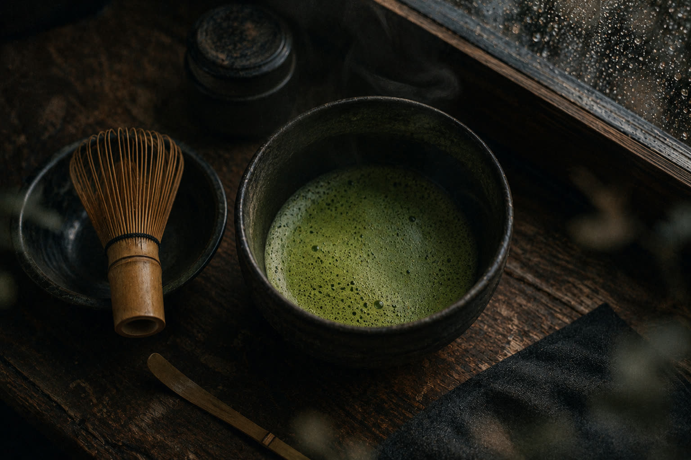
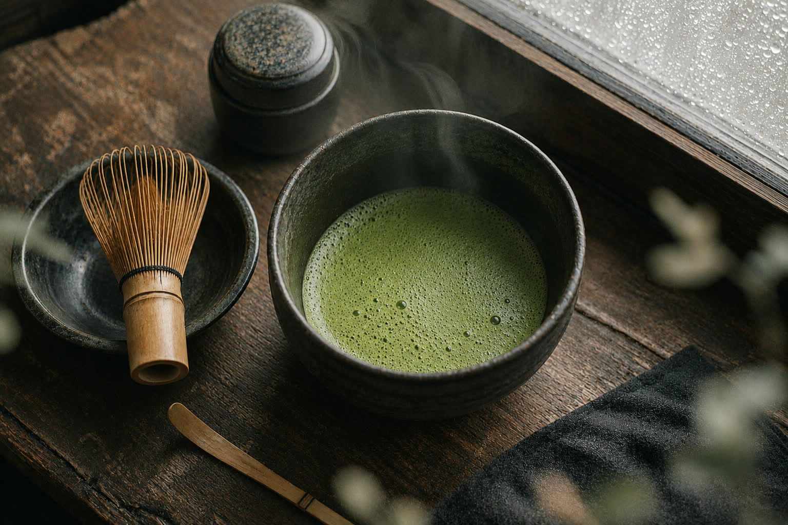

Ritualer · uses & rituals
The small machinery
of ordinary days.
Small repeated acts give the day a shape and the mind somewhere to sit. The bowl, the walk, the kettle.


Daily rituals
Matcha, first
Bowl, whisk, eighty seconds. The day's first measurement, taken in green.
The night walk
A fixed route past the harbor. Thinking happens at walking speed; rain is optional but recommended.
The shared meal
Cooking for one happens, but rarely on purpose. The pot is sized for whoever turns up.
Playlists as furniture
One for rain, one for writing, one for cleaning up after events.
Cafés of Aarhus
Third places and corner seats. Field research, faithfully reported to Matchabladet.
The kettle rule
Anyone who stays to help clean up gets tea. Non-negotiable; the kettle is communal law.
None of this is optimized. That is what it is for.